|
Scrum |
| By: Michael James, updated and revised by Ian Mitchell |
WHAT IS SCRUM?
Scrum is a simple management framework for incremental product development using one or more cross-functional, selforganizing teams of between three and nine people each.
Scrum teams use fixed-length iterations, called Sprints, which typically are two weeks or 30 days long. They attempt to build a potentially shippable (properly tested and integrated) product increment every iteration. They agree and observe a Definition of Done, which asserts the quality of their completed work. A typical Definition of Done will assert that all work must be reviewed, tested thoroughly, and integrated.
An alternative to waterfall
Scrum's incremental, iterative approach trades the traditional phases of "waterfall" development for the ability to develop a subset of high-business-value features first, incorporating user feedback sooner.
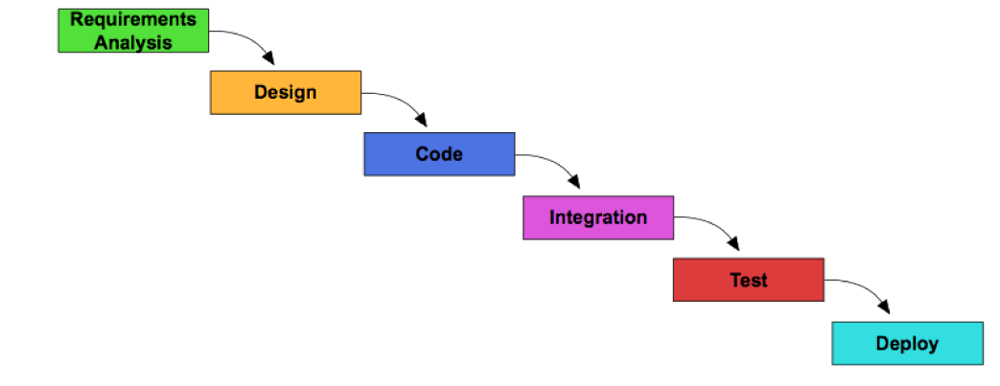
Figure 1.Traditional "waterfall" development assumes perfect understanding of requirements at outset.
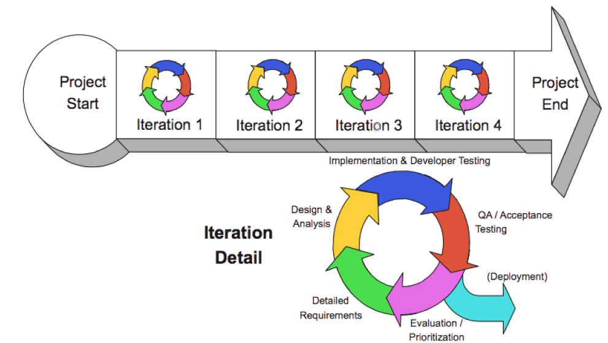
Figure 2.Scrum blends all development activities into every iteration, adapting to discovered realities at fixed intervals.
Scrum has been used for a variety of products, but has initially been most popular for software products using object-oriented technologies. It is particularly suited to high-risk endeavors where traditional efficiency concerns are secondary to the ability to deliver the right product, or any product, by the required date.
A disruptive framework to transform organizations
The reality checks forced by the short feedback loops are intended to expose dysfunction at the individual, team, and organizational levels. Rather than modify Scrum to mask these dysfunctions, organizations are encouraged to challenge these constraints and transform themselves.
Scrum is a framework, not a defined process or methodology. Scrum provides a simple structure of roles, meetings, rules, and artifacts.1 Scrum teams are responsible for creating and adapting their processes within this framework. Scrum's management practices are similar to those of eXtreme Programming (XP), but, unlike XP, Scrum does not prescribe specific engineering practices.
SCRUM ROLES
Product owner
The Product Owner is the single individual responsible for return on investment (ROI) of the product development effort. The Product Owner wholly owns the product vision and the Product Backlog, which he or she updates and reprioritizes. The Product Owner communicates release expectations with stakeholders. The Product Owner is the final arbiter of requirements questions, and makes the decision whether or not to release an increment.
Scrum development team
The Development Team is a self-organizing/-managing group of between three and nine individuals. While the Team may contain specialists, collectively it is cross-functional, containing the range of skills (including testing) which were traditionally found in different departments. The Team is given autonomy regarding how to achieve the Sprint Goal. However, all work is expected to satisfy a Definition of Done. The Definition of Done asserts the quality of the completed work and provides assurance to the Product Owner that the increment is potentially releasable.
A Scrum Development Team is most likely to succeed when members are co-located in a team room.
Scrummaster
The ScrumMaster facilitates the Scrum process, keeps the Scrum artifacts visible, facilitates Team self-organization (keeping it in the "zone"), helps resolve impediments (at the team level and organizational level), shields the team from interference, and advocates improved engineering practices.
The ScrumMaster does these things (and more) without any authority on the Team. The ScrumMaster does not make business decisions or technical decisions, does not commit to work on behalf of the Team, etc.
SCRUM MEETINGS
Scrum Meetings are time-boxed events that may be facilitated by the ScrumMaster, though he or she does not have to be there and has no decision-making authority. However, the Scrum Master is expected to coach the team to follow the rules of Scrum at these meetings and throughout each Sprint.
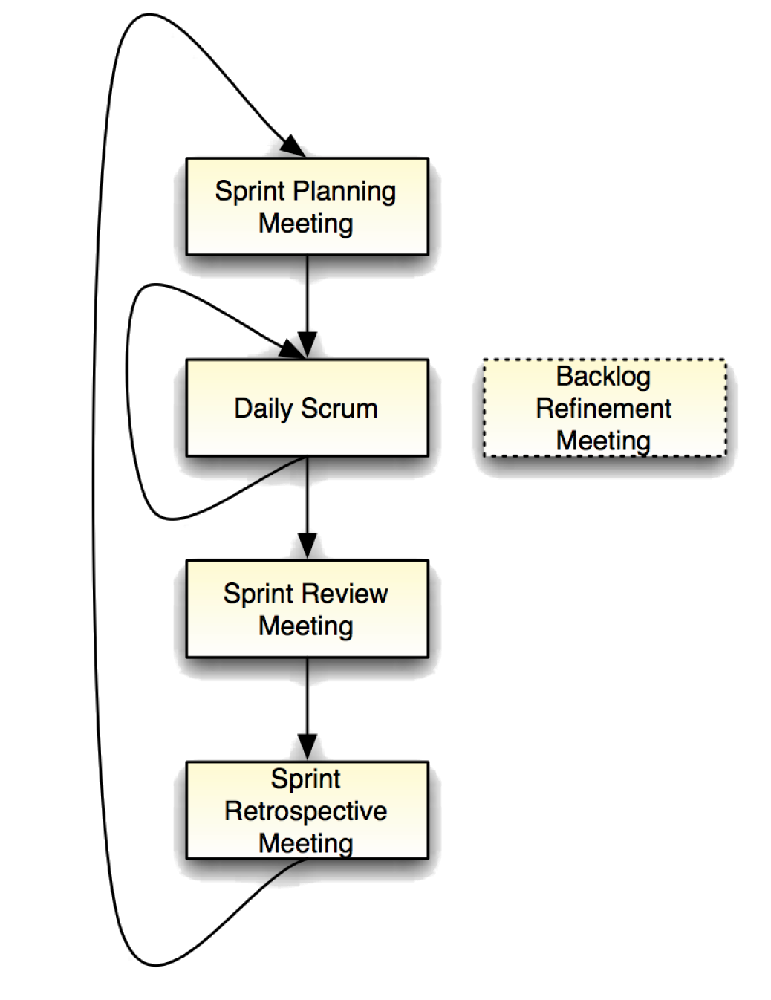
Figure 3.Scrum meetings
Sprint planning meeting
Part 1: At the beginning of each iteration, the Product Owner and Team negotiate which Product Backlog Items the Team will attempt this Sprint. The Product Owner is responsible for declaring which items are the most important to the business, and the Team is responsible for committing to the amount of work they feel they can accomplish without accruing technical debt.
Part 2: The Team decomposes the selected Product Backlog Items into an ordered plan of work, typically tasks, and makes a final commitment to the Sprint Goal. This plan is called the Sprint Backlog, and it represents the forecast of work needed to achieve the Goal as per the Definition of Done for a release-quality increment. The Product Owner's full attendance is often not necessary during Part 2. The maximum time for planning a 30-day Sprint is 8 hours.
Daily scrum
Every day, at the same time and place, the Scrum Development Team members spend 15 minutes refocusing their joint efforts on achieving the Sprint Goal. Each team member clarifies to the rest of the team what he did the previous day, what he will do today, and whatever impediments he or she may have. The Scrum Master is expected to mitigate any such impediments on behalf of the team.
The team will typically examine the current Sprint Task list, Sprint Burndown Chart, and impediments list.
The Product Owner's attendance is often not necessary at the Daily Scrum and may actually impede team self-organization.Topics that require additional discussion may be handled as optional sidebars after every team member has reported. It's a common practice to stand at this meeting to create a sense of urgency, so it's sometimes called the "standup meeting."
Reporting to an entire team, rather than to a boss, is one of the new habits Scrum team members learn.
Sprint review meeting
At the end of each Sprint execution, the Team demonstrates the actual working product increment they built to the Product Owner, and other stakeholders invited at his or her discretion. Any undone work remaining from the Sprint Backlog is examined. Incomplete items are re-estimated and returned to the Product Backlog as candidates for future Sprints. Feedback from stakeholders may be converted to new Product Backlog Items.
The Sprint Review Meeting is an opportunity to inspect and adapt the product as it emerges and iteratively refine the understanding of the requirements. New products, particularly software products, are hard to visualize in a vacuum. Many customers need to be able to react to a piece of functioning software to discover what they actually want.
Sprint retrospective
At the end of every Sprint, the team meets to ref lect on its own process. They inspect their own behavior and take action to adapt it for future Sprints. This meeting provides an inspect-and-adapt mechanism for the team's process.
Techniques ScrumMasters can use to facilitate retrospectives include silent writing, timelines, satisfaction histograms, and many others. Common topics include: "What went well?"; "What could be improved?"; "What did we learn?"; "What still puzzles us?"; "What actions will we take?"
All Scrum Team members-that is to say, the Development Team, the Scrum Master, and the Product Owner-are expected to attend each Sprint Retrospective. Candid communication will help the team gain common understanding of multiple perspectives and come up with actions that will take the team to the next level.
Backlog refinement meeting
The team estimates the effort of items in the Product Backlog so the Product Owner can prioritize them before the next Sprint Planning Meeting. Large, vague items are split and clarified. New stories might be written by a subset of the team, in conjunction with the Product Owner and other stakeholders, before involving the entire team in estimation.
This meeting lacks an official name and is not a formal Scrum Event. It is an ongoing activity which may also be called "Backlog Maintenance," "Backlog Grooming," "Backlog Estimation Meeting," etc.
SCRUM ARTIFACTS
Product backlog
- Force-ranked list of desired functionality
- Visible to all stakeholders
- Any stakeholder (including team) can add items
- Constantly re-prioritized by Product Owner
- Items at top are more granular than items at bottom
- Maintained during Backlog Refinement Meeting
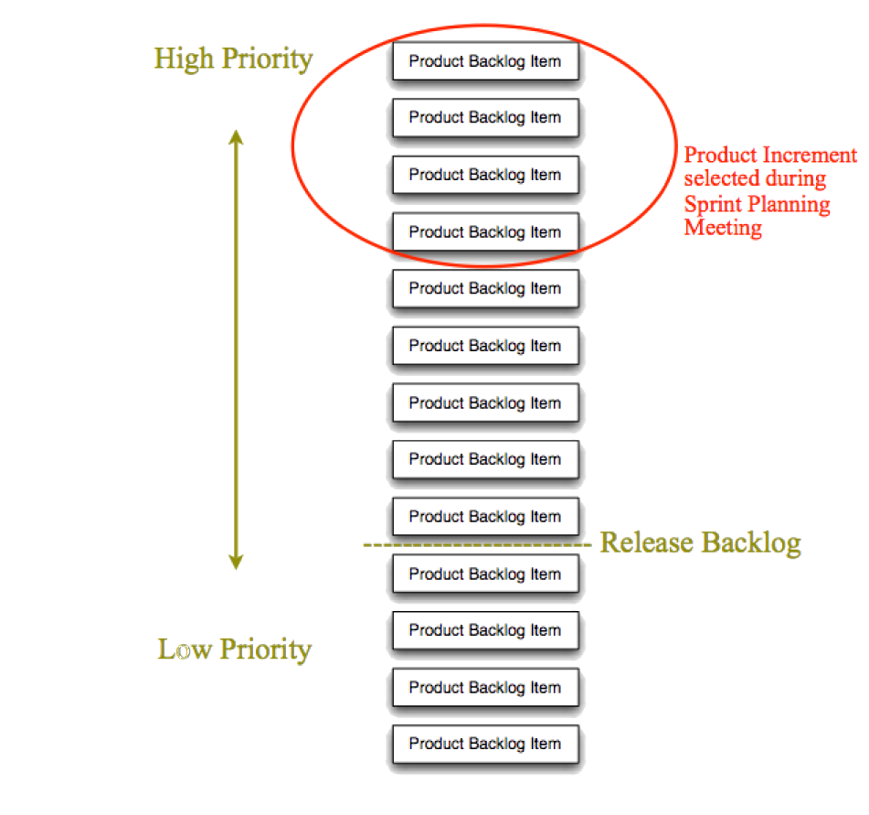
Figure 4.Product backlog
Product backlog item (PBI)
- Specifies the WHAT, not the HOW, of a customer-centric feature.
- Often written in "User Story" form
- Has acceptance criteria (and/or product-wide Definition of Done) to prevent technical debt
- Effort is estimated by Team, ideally in relative units (e.g. story points)
- Business value is estimated by Product Owner
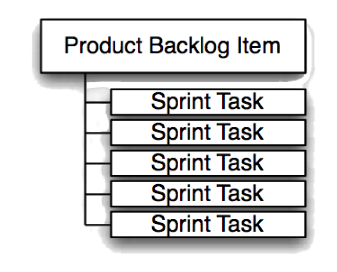
Figure 5.Each pbi represents a customer-centric feature, usually requiring several tasks to achieve definition of done.
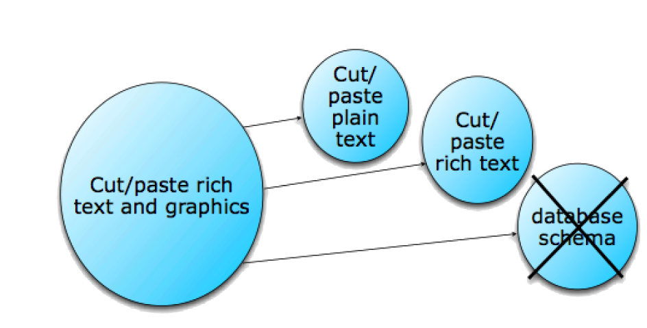
Figure 6.Large pbis (often called "epics") split into thin vertical feature slices ("stories"), not horizontal implementation phases, when they rise toward the top of the product backlog.
Sprint backlog
- A forecast of the PBIs needed to achieve the Sprint Goal, negotiated between Team and Product Owner during Sprint Planning
- May flex during Sprint Execution in order to meet the team's Sprint Goal commitment
- Visible to Team (primarily)
- Referenced during Daily Scrum Meeting
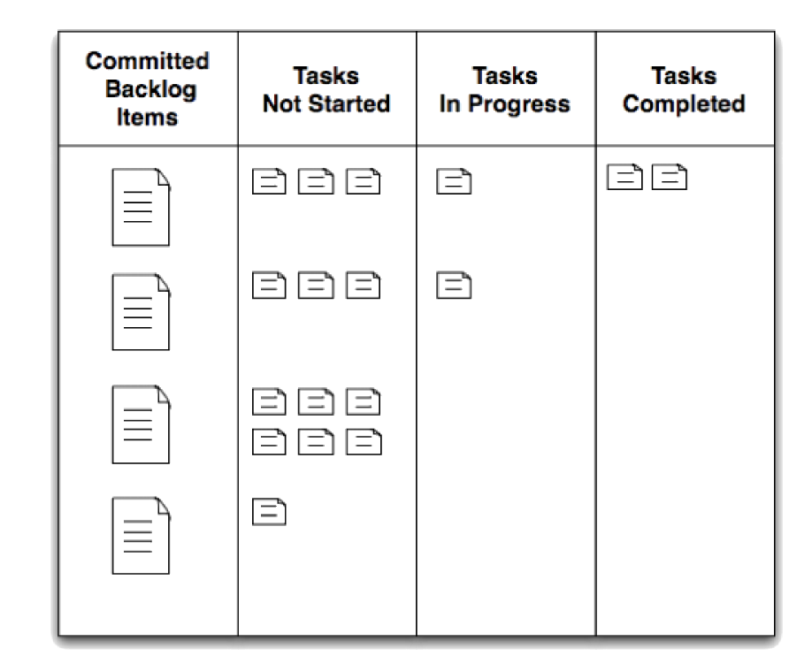
Figure 7.The sprint backlog is often represented on an "information radiator" such as a physical task board.
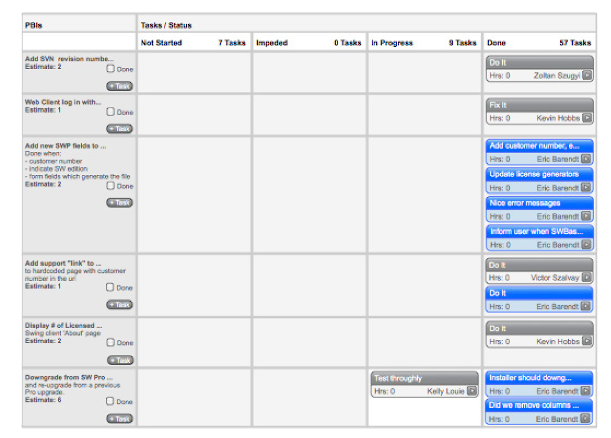
Figure 8.The sprint backlog may also be represented electronically in a collaboration tool such as scrumworks© pro. this tool's electronic task board mimics the cards of a physical task board.
Sprint task
- Specifies "how" to achieve the PBIs' "what"
- About one day or less of work
- Remainig effort re-estimated daily, typically in hours
- Task point person volunteers to see that it gets done, but commitment is owned by entire team and collaboration is expected
Sprint burndown chart
- Total remaining team task hours within one Sprint
- Re-estimated daily, thus may go up before going down
- Intended to facilitate team self-organization, not a management report
- Fancy variations, such as itemizing by point person, tend to reduce effectiveness at encouraging collaboration
Product/release burndown chart
- Tracks remaining Product Backlog effort from one Sprint to the next
- May use relative units such as "Story Points" for Y axis
- Depicts empirical trends, introducing reality check to Product Owner's release plan
- Effort is estimated by Team, ideally in relative units (e.g. story points)
- Business value is estimated by Product Owner
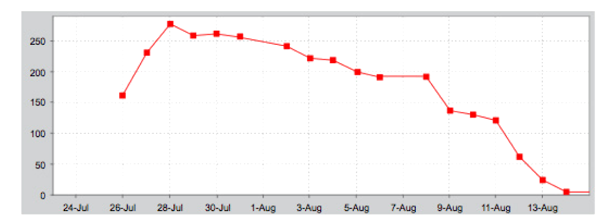
Figure 9.Sprint burndown chart
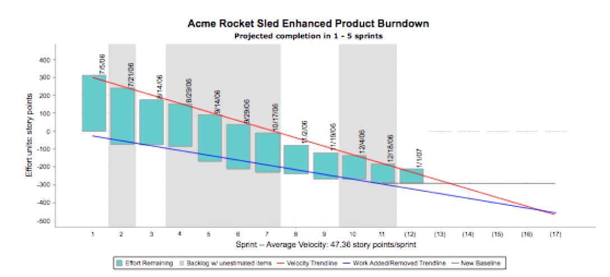
Figure 10.A release burndown chart variation popularized by mike cohn. the red line tracks pbis completed over time (velocity), while the blue line tracks new pbis added (new scope discovery). the intersection projects release completion date from empirical data.
SCALING SCRUM
Scrum addresses uncertain requirements and technology risks by grouping people from multiple disciplines into one team, ideally in one team room, to maximize communication bandwidth, visibility, and trust.
When requirements are uncertain and technology risks are high, adding too many people makes things worse.
Traditional practices of grouping people by specialty or architectural component can also make things worse. Typical problems include messy
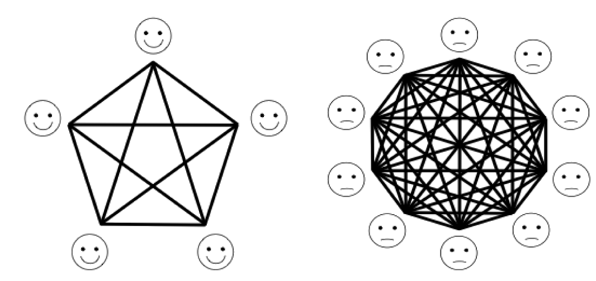
Figure 11.Communicaton pathways increase geometrically with team size.
team interdependencies, late discovery of integration risks (being "90% done 50% of the time"), and poor alignment of effort with business value.
A more successful approach has been fully cross-functional "feature teams," able to operate at all layers of the architecture, and across components if necessary.
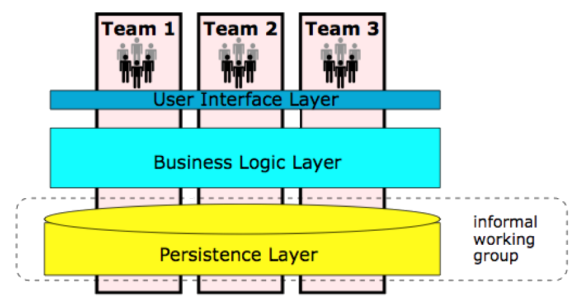
Figure 12.Cross-functional teams organized around related features.
Rather than get all aspects of a component working first, a feature team focuses on thin user-centric slices of functionality that cut through multiple architectural layers or physical components.
Since multiple feature teams risk stepping on each other's work, it's wise to get practices of continuous integration (with robust test coverage enforced through a product-wide Definition of Done) established by one feature team before adding other teams.
Multiple teams coordinate with each other in a variety of ways, including sending delegates to each other's meetings or to central "Scrum of Scrums" meetings. Individuals working on particular components may form informal working groups with their counterparts on other feature teams. They are primarily responsible to their feature teams, however.
Organizations seeking to scale Scrum are advised to pursue training, coaching, and to examine previous case studies. Scaling frameworks and studies of their application can be found on the site agilepatterns.org .
RELATED PRACTICES
Scrum is a general management framework coinciding with the Agile movement in software development, which is partly inspired by Lean manufacturing approaches such as the Toyota Production System. Scrum has been popularized by people like Ken Schwaber, organizations like the Scrum Alliance and Scrum.org, and several other organizations. Unlike eXtreme Programming (XP), Scrum does not prescribe specific engineering practices.
Scrum focuses on incrementally improving the Definition of Done (particularly around testing) before work is demonstrated. This can motivate the team to adopt engineering practices associated with XP and reduce technical debt: Continuous Integration (continuous automated testing), Test-Driven Development (TDD), constant refactoring, pair programming, frequent check-ins, etc.
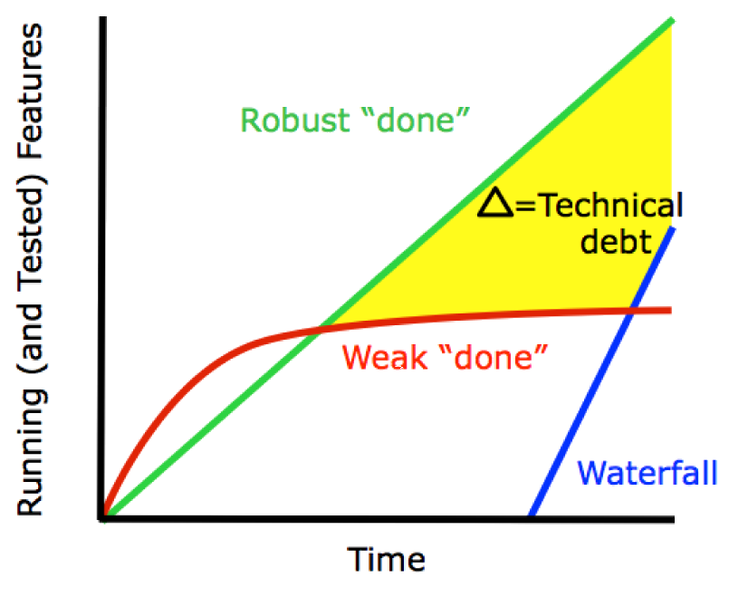
Figure 13.The green line represents the general goal of agile methods. doing scrum properly entails incrementally improving the definition of "done" to prevent technical debt.
RELATED PRACTICES
Defined processes vs. an empirical framework
Teams applying Scrum rigorously (as intended by this author) may find themselves questioning traditional "best practices."
The expectation of a working product demonstrated early and often, combined with frequent retrospection, leads teams to challenge assumptions from respected sources such as the Project Management Institute's Project Management Body of Knowledge (PMBOK©), existing waterfall habits, and more prescriptive processes for iterative development such as IBM's Rational Unified Process (RUP). Scrum teams may even question agile practices such as eXtreme Programming (XP).
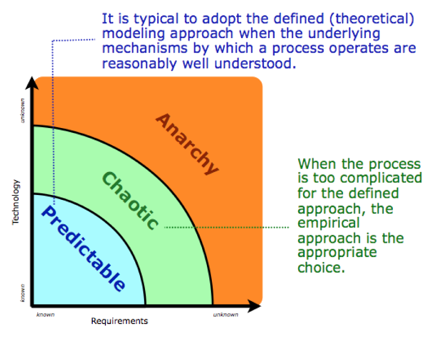
Figure 14.Scrum is intended for the green space labeled as "chaotic" above.
The disruption of introducing Scrum is not always advisable when defined processes could meet the needs. Ken Schwaber has said, "If waterfall suits current needs, continue using it." Consider whether the underlying mechanisms are well understood. Scrum was not originally intended for repeatable types of production and services.
Scrum is intended for the kinds of work defined processes have often failed to manage: uncertain requirements combined with unpredictable technology implementation risks. These conditions usually exist during new product development.
Challenges and opportunities of team self-organization
This author has seen self-organizing teams radically outperform larger, more experienced, traditionally managed teams. Family- sized groups naturally self-organize when they are committed to clear, short-term goals; all members can gauge the group's progress; and all members can observe each other's contribution.
Psychologist Bruce Tuckman describes stages of group development as "forming, storming, norming, performing."10 Optimal selforganization takes time, introducing a reasonable risk the team will perform worse during early iterations than it might have as a traditionally managed working group.
Research suggests heterogeneous teams outperform homogeneous teams when doing complex work, and they experience more conf lict.11 Disagreements are to be expected on a motivated team- team performance will be determined by how well the team handles these conflicts.
"Bad apple theory" suggests a single negative individual ("withholding effort from the group, expressing negative affect, or violating important interpersonal norms"12) can disproportionately reduce performance of an entire group. Such individuals are rare, but their impact is magnified by a team's reluctance to remove them. This can be partly mitigated by giving teams greater inf luence over who joins them.
Other individuals who underperform in a boss/worker situation (due to being under-challenged or micromanaged) will shine on a Scrum team.
Self-organization is hampered by conditions such as geographic distribution, boss/worker dynamics, part-time team members, and interruptions unrelated to sprint goals. Most teams will benefit from a full-time ScrumMaster, whose responsibilities include helping mitigate these kinds of impediments.
SCRUM EDUCATION AND CERTIFICATES
Scrum is mainly an oral tradition conveyed through Certified ScrumMaster (CSM) courses. These are typically two-day events led by trainers who have been vetted by the Scrum Alliance.13 The CSM credential does not prove proficiency. It is intended as a stepping stone toward Certified Scrum Practitioner (CSP), an indication of at least one year of experience doing Scrum. The Scrum Alliance also certifies Scrum Product Owners, coaches, and trainers.
The Scrum co-founder, Ken Schwaber, has founded an alternative certification body, Scrum.org. This body puts a greater emphasis on high-stakes online examinations and classroom attendance is usually optional.